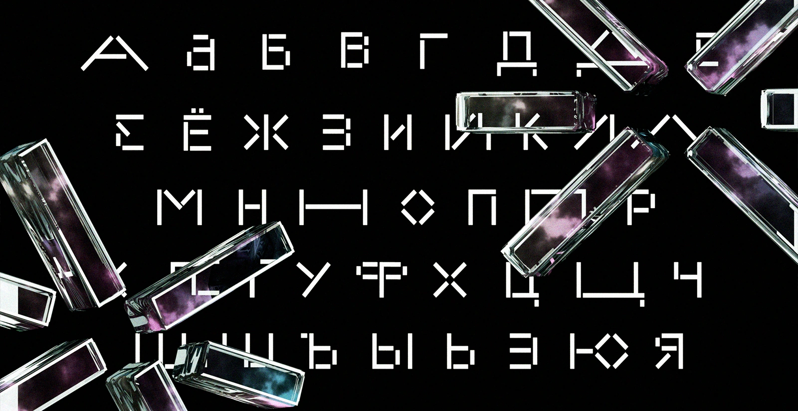
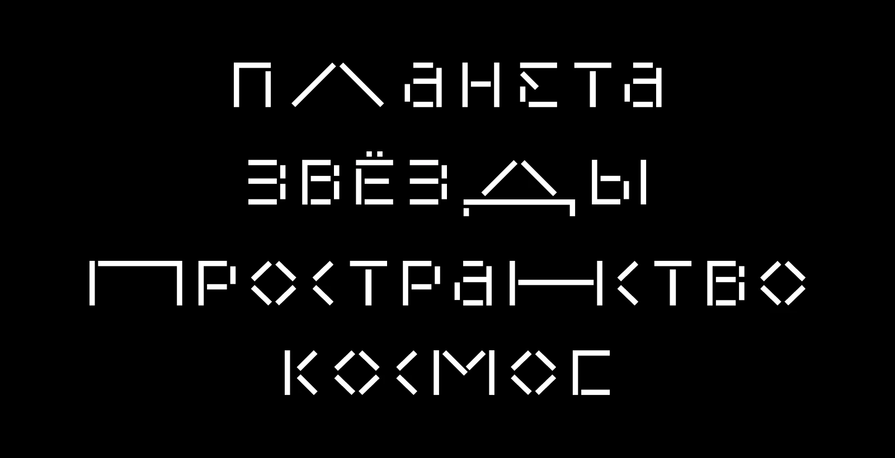
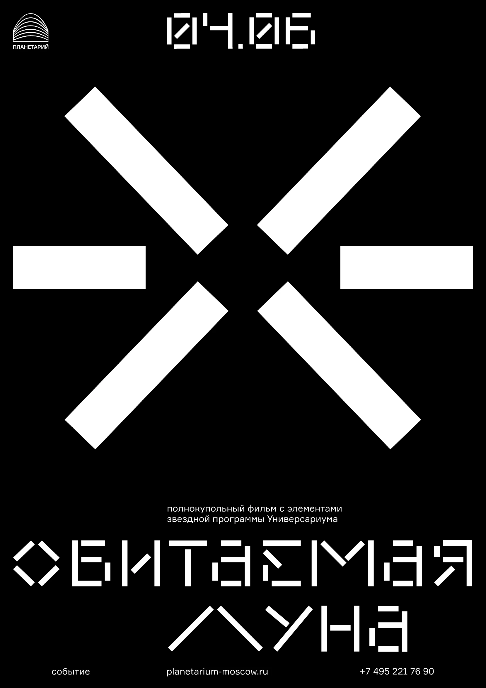
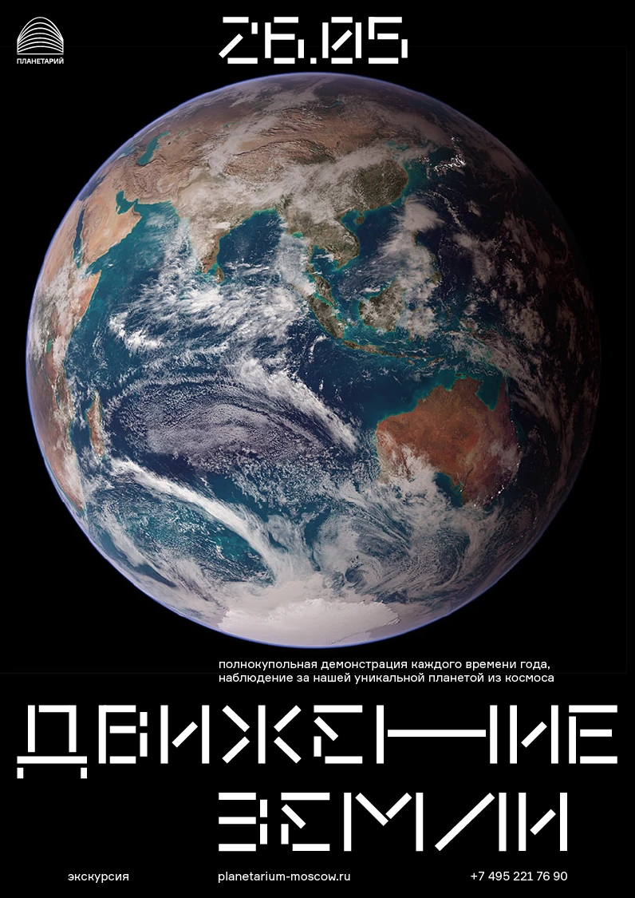
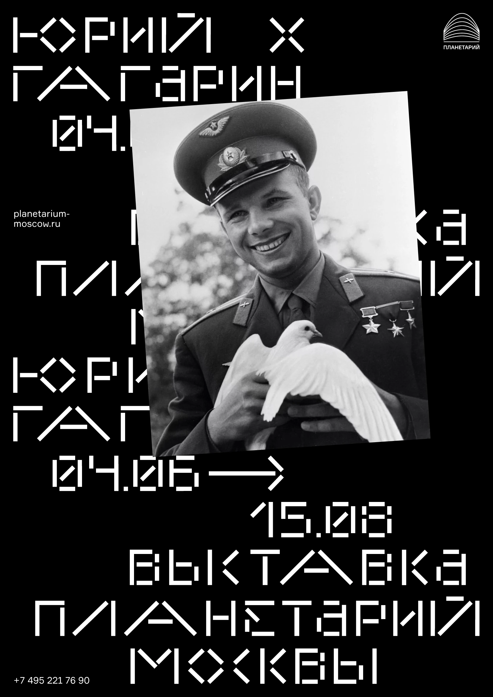
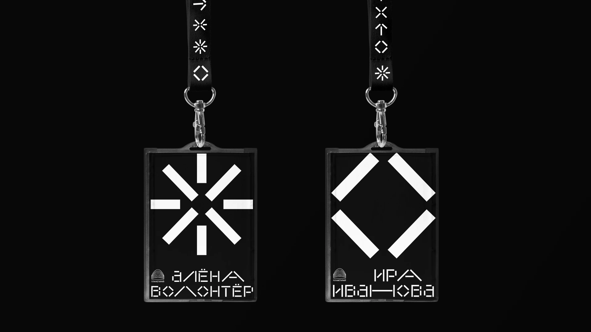

planetarium
Redesign for the Moscow planetarium. I created a new identity that includes a variable font based on simple elements. These elements also formed the basis for the shape of the stars. In addition, I created generative graphics for their website.





